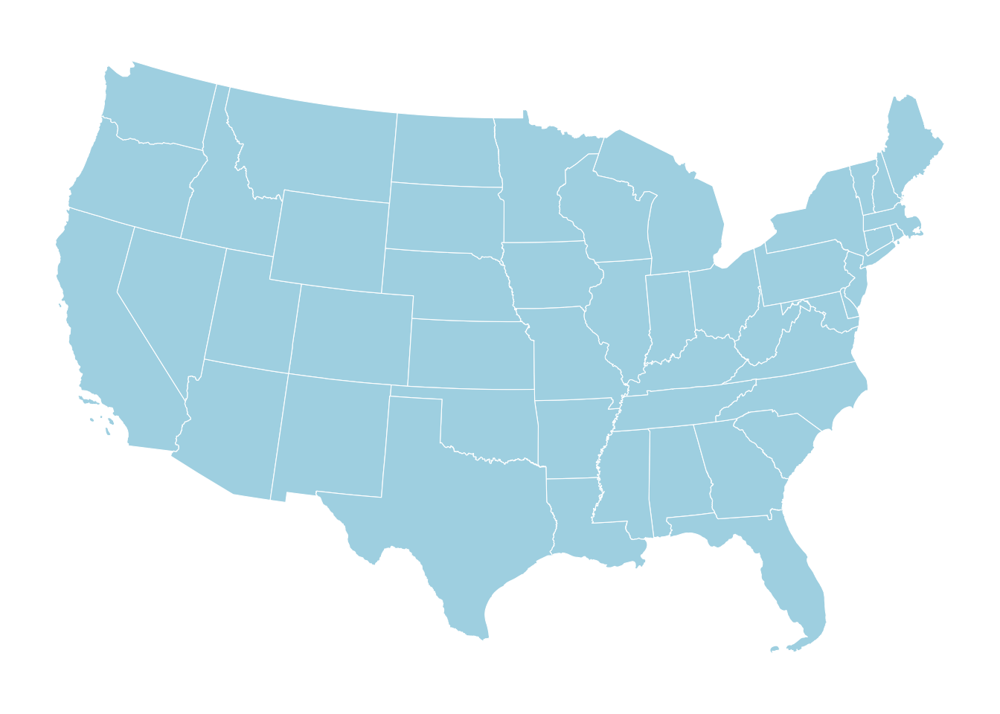
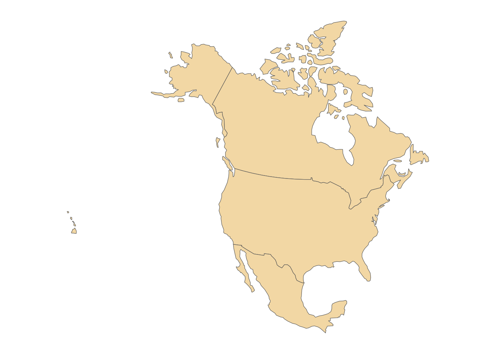
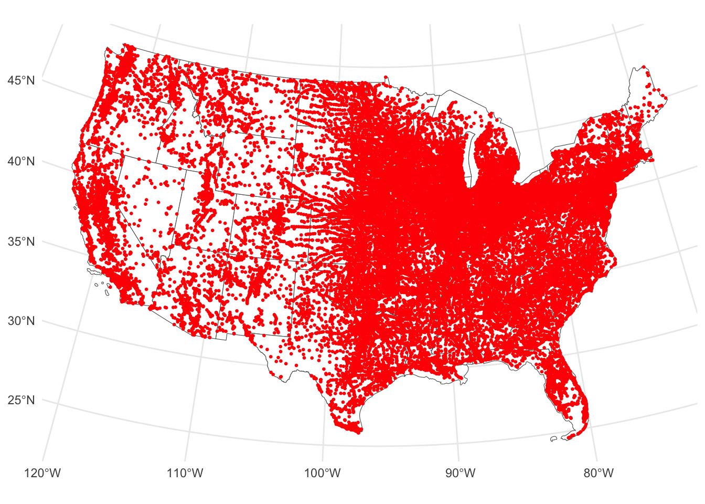
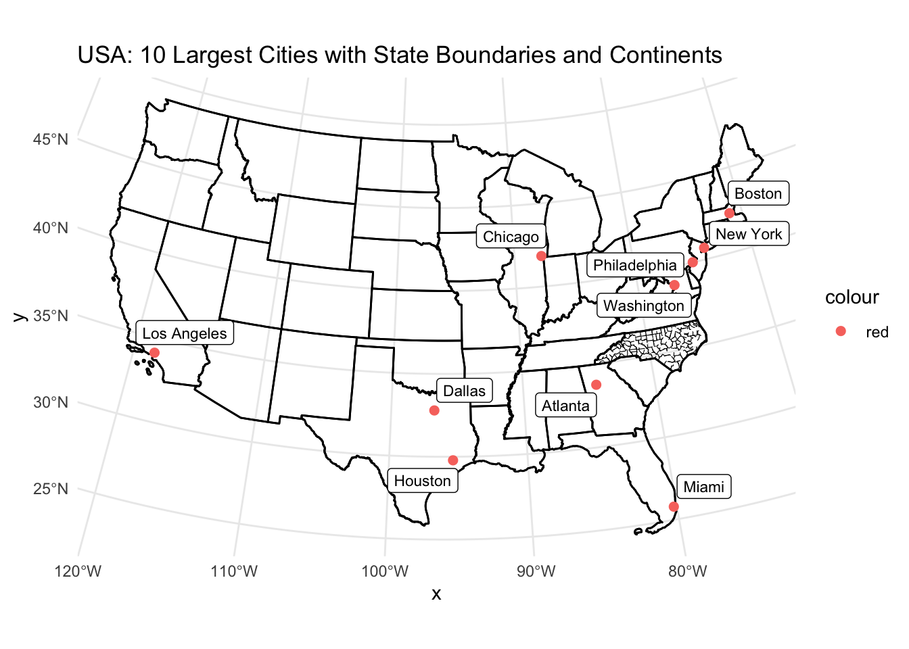
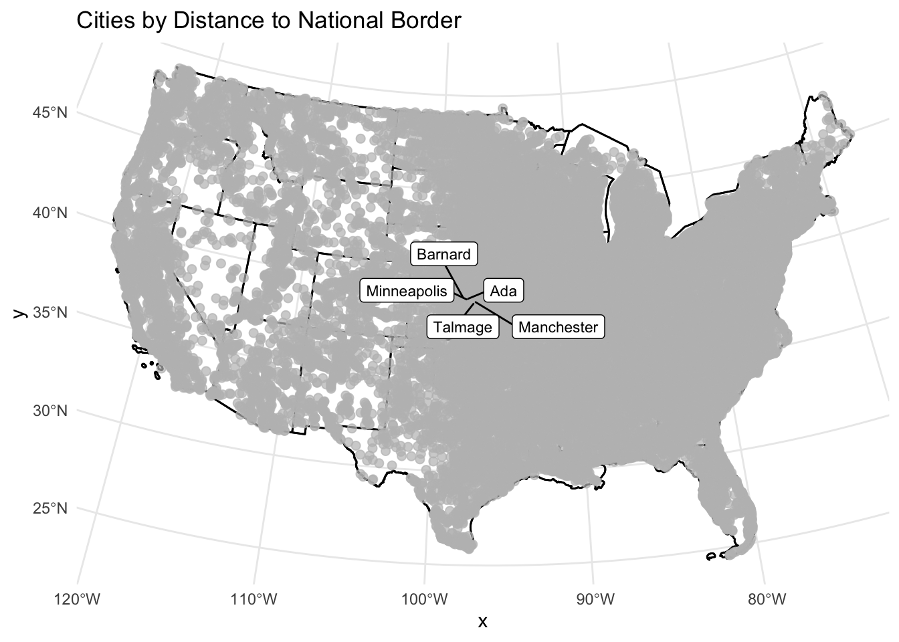
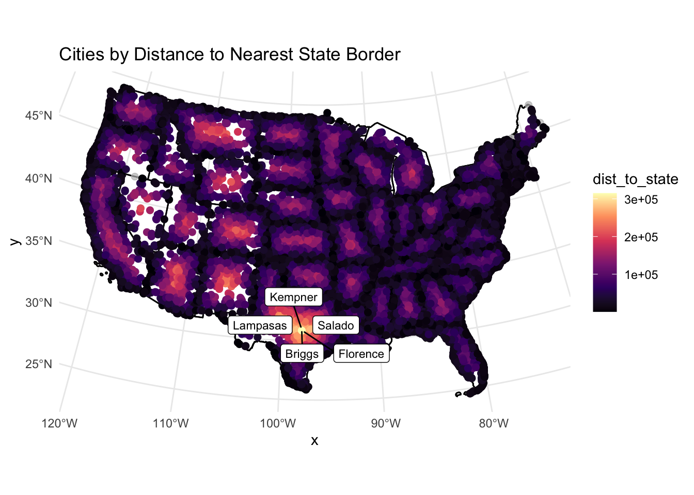
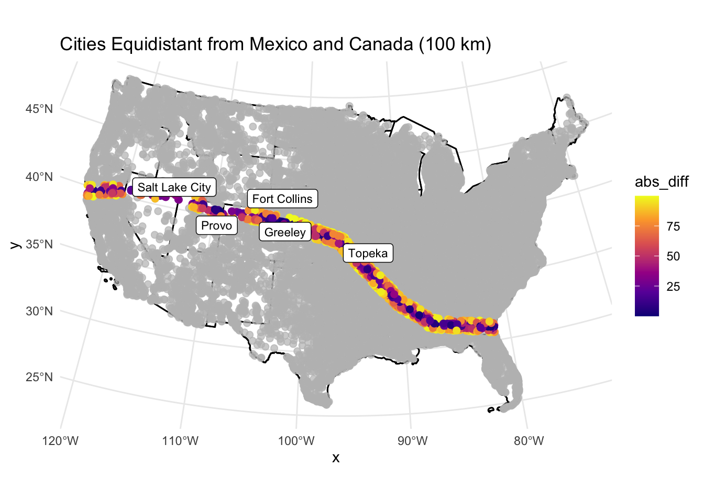
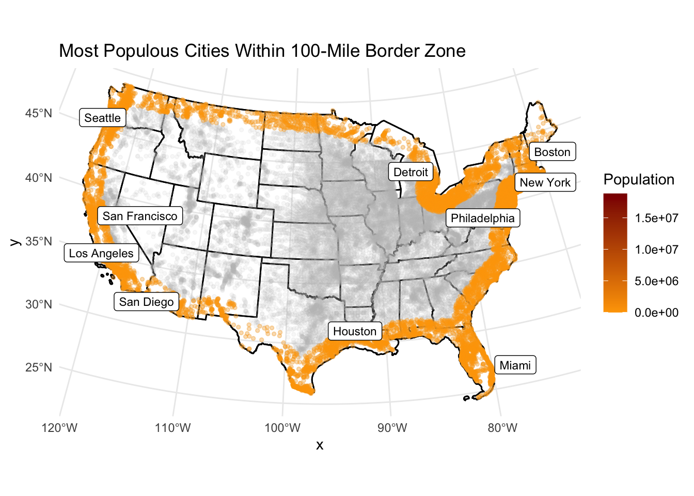

# 1.2 Get USA state boundaries remotes::install_github("mikejohnson51/AOI")
Using GitHub PAT from the git credential store.
Skipping install of 'AOI' from a github remote, the SHA1 (f821d499) has not changed since last install.
Use `force = TRUE` to force installation
# Get continental US statesusa_states <-aoi_get(state ="conus")# Transform to eqdc projectionusa_states <-st_transform(usa_states, crs = eqdc)# Previewggplot() +geom_sf(data = usa_states, fill ="lightblue", color ="white") +coord_sf(datum =NA) +theme_minimal()

# 1.3 Get country boundaries for Mexico, the United States of America, and Canada na_countries <-aoi_get(country =c("USA", "MX", "CA"))# Transform to eqdc projectionna_countries <-st_transform(na_countries, crs = eqdc)# Optional: Plot to checkggplot() +geom_sf(data = na_countries, fill ="wheat", color ="gray40") +coord_sf(datum =NA) +theme_minimal()

# 1.4 Get City Locations from the CSV file# Load cities CSVcities_raw <-read_csv("uscities.csv")
Rows: 31254 Columns: 17
── Column specification ────────────────────────────────────────────────────────
Delimiter: ","
chr (9): city, city_ascii, state_id, state_name, county_fips, county_name, s...
dbl (6): lat, lng, population, density, ranking, id
lgl (2): military, incorporated
ℹ Use `spec()` to retrieve the full column specification for this data.
ℹ Specify the column types or set `show_col_types = FALSE` to quiet this message.
# Convert to spatial (initial CRS = NAD83)cities_sf <-st_as_sf(cities_raw, coords =c("lng", "lat"), crs =4269) # NAD83# Reproject to eqdccities_sf <-st_transform(cities_sf, crs = eqdc)# Optional: Remove non-CONUS cities using state filter (e.g., only use cities in usa_states)cities_sf <- cities_sf %>%st_join(usa_states, join = st_within) %>%filter(!is.na(name)) # Remove cities that didn’t match a state polygon# Plot to checkggplot() +geom_sf(data = usa_states, fill ="white") +geom_sf(data = cities_sf, color ="red", size =0.5) +theme_minimal()

Question 2
# 2.1 Distance to USA Border (coastline or national)(km)# Combine all state boundaries into one geometry and resolve shared boundariesusa_border <- usa_states %>%st_union() %>%st_cast("MULTILINESTRING")# Compute distance of each city to USA national bordercities_sf <- cities_sf %>%mutate(dist_to_usa_border_km =st_distance(geometry, usa_border) %>%set_units("km") %>%drop_units())library(flextable)
Attaching package: 'flextable'
The following object is masked from 'package:purrr':
compose
# 3.1 Data library(ggplot2)library(ggrepel)library(gghighlight)library(dplyr)library(sf)# Example of getting world map dataworld <-st_read(system.file("shape/nc.shp", package="sf"))
Reading layer `nc' from data source
`/Library/Frameworks/R.framework/Versions/4.4-arm64/Resources/library/sf/shape/nc.shp'
using driver `ESRI Shapefile'
Simple feature collection with 100 features and 14 fields
Geometry type: MULTIPOLYGON
Dimension: XY
Bounding box: xmin: -84.32385 ymin: 33.88199 xmax: -75.45698 ymax: 36.58965
Geodetic CRS: NAD27
# Create a map with continents, CONUS outline, state boundaries, and 10 largest citiesggplot() +# Plot CONUS outlinegeom_sf(data = usa_border, fill ="lightgray", color ="black", lty =1) +# Plot state boundariesgeom_sf(data = state_borders, fill =NA, color ="black", size =0.5) +# Highlight and label the 10 largest citiesgeom_sf(data = cities_sf %>%slice_max(population, n =10), aes(color ="red"), size =2) + ggrepel::geom_label_repel(data = cities_sf %>%slice_max(population, n =10),aes(label = city, geometry = geometry),stat ="sf_coordinates",size =3) +# Plot continents if you have themgeom_sf(data = world, fill =NA, color ="black", lty =2) +labs(title ="USA: 10 Largest Cities with State Boundaries and Continents") +theme_minimal()

# 3.2 City Distance from the Border # Calculate the distance from each city to the national bordercities_sf$dist_to_border <-st_distance(cities_sf, usa_border) %>%set_units("km") %>%drop_units() # Remove units for ease of plottingggplot() +# Plot USA border and state boundariesgeom_sf(data = usa_border, fill ="lightgray", color ="black", lty =1) +geom_sf(data = state_borders, fill =NA, color ="black", size =0.5) +# Color cities by distance from national bordergeom_sf(data = cities_sf, aes(color = dist_to_border), size =2) +scale_color_viridis_c(option ="D") +# Color scale for distance# Highlight the 5 cities farthest from the bordergghighlight(dist_to_border >2000, label_key = city) +# Remove quotes around "city"# Add labels for the 5 farthest cities ggrepel::geom_label_repel(data = cities_sf %>%slice_max(dist_to_border, n =5),aes(label = city, geometry = geometry),stat ="sf_coordinates",size =3) +labs(title ="Cities by Distance to National Border") +theme_minimal()
Warning: Using one column matrices in `filter()` was deprecated in dplyr 1.1.0.
ℹ Please use one dimensional logical vectors instead.
ℹ The deprecated feature was likely used in the gghighlight package.
Please report the issue at
<https://github.com/yutannihilation/gghighlight/issues>.
Warning: Could not calculate the predicate for layer 1, layer 2; ignored

# 3.3 City Distance from Nearest State # Calculate the distance from each city to the nearest state bordercities_sf$dist_to_state <-st_distance(cities_sf, state_borders) %>%apply(1, min) %>%set_units("km") %>%drop_units() # Remove units for ease of plotting# Now plot the cities based on the distance to the nearest state borderggplot() +# Plot USA border and state boundariesgeom_sf(data = usa_border, fill ="lightgray", color ="black", lty =1) +geom_sf(data = state_borders, fill =NA, color ="black", size =0.5) +# Color cities by distance to the nearest state bordergeom_sf(data = cities_sf, aes(color = dist_to_state), size =2) +scale_color_viridis_c(option ="A") +# Color scale for distance# Highlight the 5 cities farthest from the state bordergghighlight(dist_to_state >500, label_key = city) +# Add labels for the 5 farthest cities ggrepel::geom_label_repel(data = cities_sf %>%slice_max(dist_to_state, n =5),aes(label = city, geometry = geometry),stat ="sf_coordinates",size =3) +labs(title ="Cities by Distance to Nearest State Border") +theme_minimal()
Warning: Could not calculate the predicate for layer 1, layer 2; ignored

# 3.4 Equidistance boundary from Mexico and Canada# Create a new variable for the absolute difference between the distances to Mexico and Canadacities_sf <- cities_sf %>%mutate(abs_diff =abs(dist_to_mexico - dist_to_canada_km))ggplot() +# Plot USA border and state boundariesgeom_sf(data = usa_border, fill ="lightgray", color ="black", lty =1) +geom_sf(data = state_borders, fill =NA, color ="black", size =0.5) +# Color cities by the absolute difference in distancesgeom_sf(data = cities_sf, aes(color = abs_diff), size =2) +scale_color_viridis_c(option ="C") +# Color scale for the difference# Highlight the cities that are equidistant from both borders (100 km)gghighlight(abs_diff <100, label_key = city) +# Add labels for the 5 most populous cities in this zone ggrepel::geom_label_repel(data = cities_sf %>%filter(abs_diff <100) %>%slice_max(population, n =5),aes(label = city, geometry = geometry),stat ="sf_coordinates",size =3) +labs(title ="Cities Equidistant from Mexico and Canada (100 km)") +theme_minimal()
Warning: Could not calculate the predicate for layer 1, layer 2; ignored

Question 4
# 4.1 Quantifying Border Zone# Define 100 miles in kilometersborder_buffer_km <-160# Calculate the distance from each city to the border (you may already have this)cities_sf$dist_to_border <-st_distance(cities_sf, usa_border) %>%set_units("km") %>%drop_units()# Filter cities within 100 miles of the borderborder_zone <- cities_sf %>%filter(dist_to_border <= border_buffer_km)# Summarize countsn_cities <-nrow(border_zone)total_pop <-sum(border_zone$population, na.rm =TRUE)total_pop_all <-sum(cities_sf$population, na.rm =TRUE)percent_pop <- (total_pop / total_pop_all) *100# Report as a tableborder_zone_summary <-tibble(`# of Cities`= n_cities,`Population in Zone`= total_pop,`Total Population`= total_pop_all,`Percent in Zone`= percent_pop)border_zone_summary
# A tibble: 1 × 4
`# of Cities` `Population in Zone` `Total Population` `Percent in Zone`
<int> <dbl> <dbl> <dbl>
1 9813 216043045 396228558 54.5
ACLU’s article said about 2/3 of U.S. Cities fall within this zone but my data suggests about 54% of U.S. Cities fall within this zone.
# 4.2 Mapping Border Zone ggplot() +geom_sf(data = usa_border, fill ="lightgray", color ="black") +geom_sf(data = state_borders, fill =NA, color ="black", size =0.3) +# Color all cities by population with those in the border zone highlightedgeom_sf(data = cities_sf, aes(color = population), size =1, alpha =0.3) +gghighlight(dist_to_border <=160, use_direct_label =FALSE, unhighlighted_params =list(alpha =0.1)) +scale_color_gradient(low ="orange", high ="darkred") +# Label the 10 most populous cities in the zone ggrepel::geom_label_repel(data = border_zone %>%slice_max(population, n =10),aes(label = city, geometry = geometry),stat ="sf_coordinates",size =3, color ="black") +labs(title ="Most Populous Cities Within 100-Mile Border Zone",color ="Population") +theme_minimal()
Warning: Could not calculate the predicate for layer 1, layer 2; ignored

# 4.3 Instead of labeling the 10 most populous cities, label the most populous city in each state within the Danger Zone.# Get most populous city per state in the border zonemost_pop_per_state <- border_zone %>%group_by(state_name.x) %>%slice_max(order_by = population, n =1) %>%ungroup()ggplot() +geom_sf(data = usa_border, fill ="lightgray", color ="black") +geom_sf(data = state_borders, fill =NA, color ="black", size =0.3) +geom_sf(data = cities_sf, aes(color = population), size =1, alpha =0.3) +gghighlight(dist_to_border <=160, use_direct_label =FALSE, unhighlighted_params =list(alpha =0.1)) +scale_color_gradient(low ="orange", high ="darkred") + ggrepel::geom_label_repel(data = most_pop_per_state,aes(label = city, geometry = geometry),stat ="sf_coordinates",size =3, color ="black") +labs(title ="Most Populous City in Each State Within 100-Mile Border Zone",color ="Population") +theme_minimal()
Warning: Could not calculate the predicate for layer 1, layer 2; ignored
Warning: ggrepel: 5 unlabeled data points (too many overlaps). Consider
increasing max.overlaps